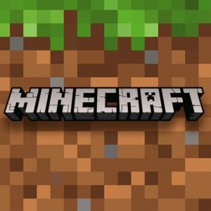

Minecraft es un videojuego tipo sandbox creado por Markus Persson y desarrollado por Mojang Studios. Permite a los jugadores construir y explorar mundos generados aleatoriamente, utilizando bloques de diferentes materiales. Con su estilo pixelado y libertad creativa, se convirtió en uno de los juegos más vendidos de la historia.
Markus "Notch" Persson fue el creador original de Minecraft en 2009. Posteriormente, Mojang Studios continuó su desarrollo y en 2014 fue adquirido por Microsoft.
La versión 1.21 introdujo nuevos biomas, estructuras y mejoras en la inteligencia de los mobs. Además, se optimizó el rendimiento y se añadieron bloques decorativos nuevos.